HTTP는 왜 사용자를 기억하지 못할까요
팀 버너스리가 웹을 만든 목적은 논문 같은 문서를 편하게 공유하는 거였어요. 문서만 잘 건네면 되니까 HTTP는 요청을 받고 응답한 뒤 곧바로 연결을 끊도록 설계됐어요. 그래서 HTTP를 비연결·무상태 프로토콜이라고 불러요.
슬라이드 가운데 'And Close.'가 이 구조를 한 줄로 보여 줘요. 왼쪽 '단순 문서 전달'이 당시의 목적이고, 오른쪽 '서버의 평화'는 서버가 요청을 처리하고 잊어버리기만 하면 됐다는 뜻이에요.
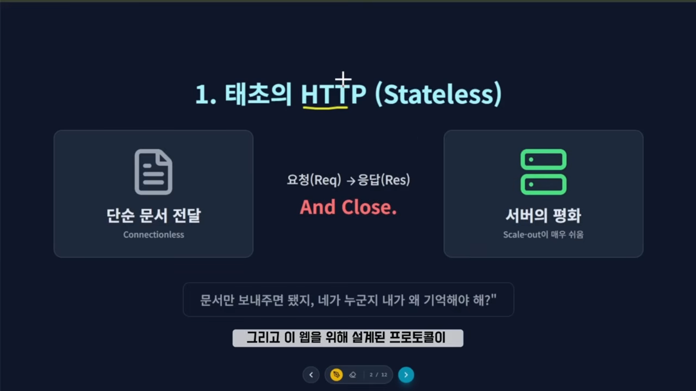
애플리케이션이 되면서 생긴 문제
웹이 쇼핑몰 같은 애플리케이션으로 바뀌자 무상태가 걸림돌이 됐어요. 왼쪽 빨간 칸 'Context의 단절'의 세 줄이 그 과정이에요. 장바구니에 담고, 결제 페이지로 새 요청을 보내면, 서버는 '너 누구야? 아까 걔 맞아?'라고 묻게 돼요. 오른쪽 'Need Identity'가 여기서 생긴 요구예요. 연결은 끊어도 사용자는 기억하고 싶다는 거죠.
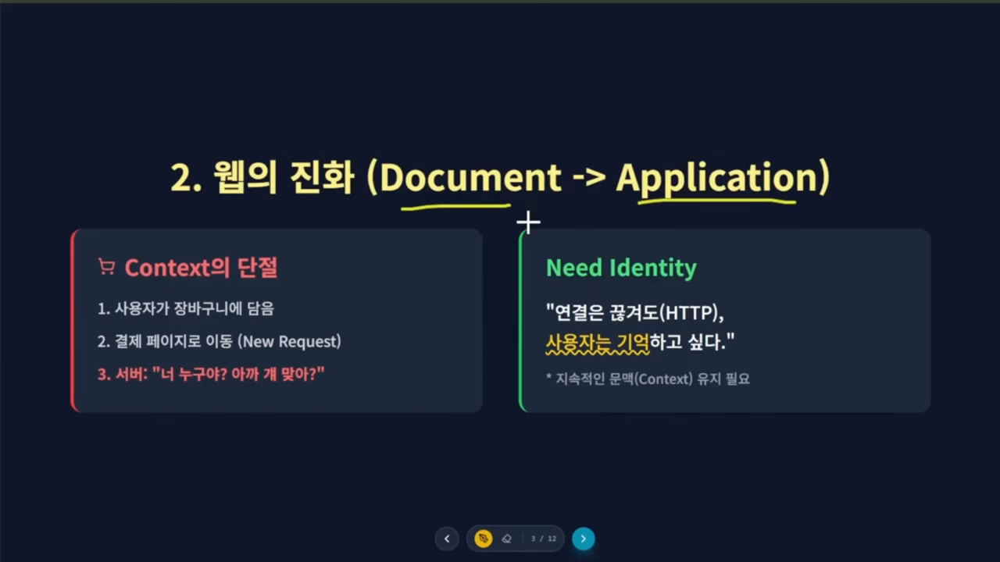
첫 꼼수: URL에 아이디 붙이기
가장 먼저 쓴 방법은 URL(Uniform Resource Locator) 뒤에 물음표를 붙여 사용자 아이디를 넘기는 거였어요. 슬라이드의 두 주소 모두 끝에 ?user_id=gildong123이 붙어 있어요. 아래 빨간 항목 세 개가 문제점이에요. 옆 사람이 화면만 봐도 아이디가 보이고, 링크를 공유하면 받은 사람이 공유한 사람 계정으로 접속돼요. 개발자는 모든 링크에 아이디를 붙여야 했고요.
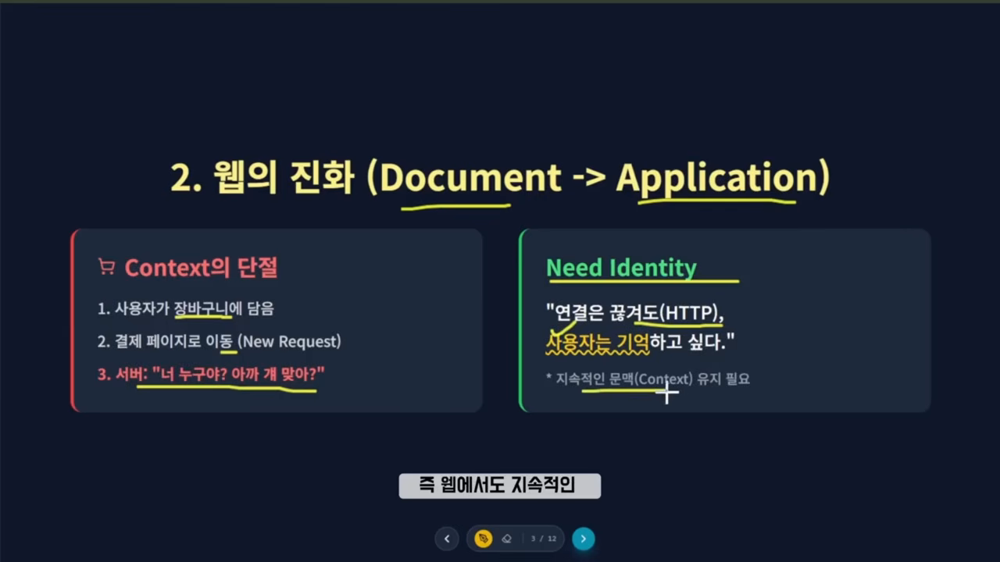
쿠키: 브라우저에 상태를 맡기기
1994년 넷스케이프의 루 몬툴리(Lou Montulli)가 장바구니 기능을 만들려고 쿠키를 고안했어요. 핵심은 상태를 서버가 아니라 브라우저에 두자는 거예요.
슬라이드 오른쪽이 동작 순서예요. 서버가 응답에 Set-Cookie: user=gildong을 실어 보내면 브라우저가 저장하고, 다음 요청부터는 브라우저가 알아서 Cookie: user=gildong 헤더를 붙여 보내요. 개발자가 링크마다 아이디를 붙일 필요가 없어진 거예요.
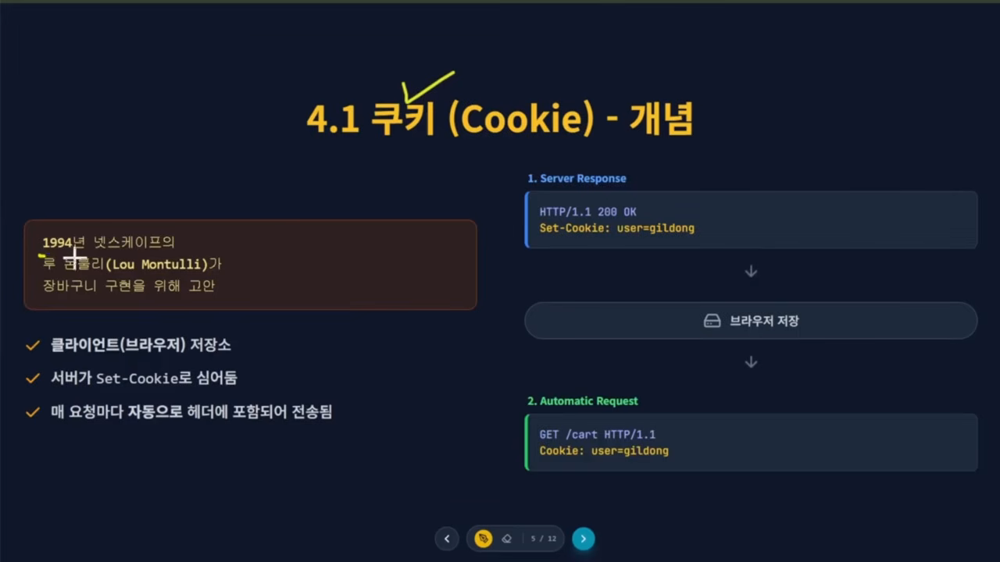
발표자는 지금도 보안상 문제없는 값은 쿠키에 저장한다고 덧붙여요. 문제는 중요한 값을 쿠키에 넣을 때 생겨요.
쿠키의 두 가지 한계
왼쪽 '보안 취약점' 칸의 첫 줄이 가장 큰 문제예요. 쿠키는 클라이언트에 있으니 사용자가 F12 개발자 도구나 프록시로 값을 고칠 수 있어요. 실제로 결제 금액을 쿠키에 넣었다가 사용자가 100원으로 바꿔 결제한 사고도 있었다고 해요. 그 아래 XSS(Cross-Site Scripting)는 자바스크립트로 쿠키를 빼 가는 공격, CSRF(Cross-Site Request Forgery)는 쿠키가 자동으로 따라가는 성질을 악용하는 공격이에요.
오른쪽 '네트워크 부하' 칸은 쿠키가 매 요청 헤더에 붙는다는 점을 짚어요. 이미지나 CSS(Cascading Style Sheets) 같은 정적 리소스 요청에도 쿠키가 따라가서 쓸데없는 트래픽이 생겨요.
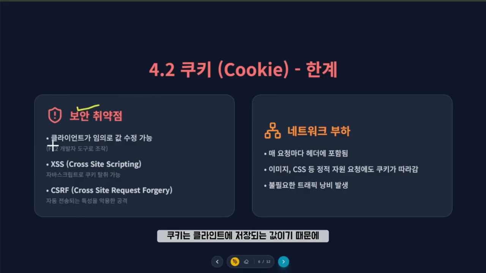
세션: 중요한 건 서버가 기억하기
세션의 생각은 슬라이드 왼쪽 인용문 그대로예요. '클라이언트는 못 믿겠다. 중요한 건 서버가 기억한다.'
오른쪽 그림에서 브라우저가 가진 건 위쪽 검은 칸의 JSESSIONID=7A5BD9F2C10... 하나뿐이에요. 이건 아무 의미 없는 랜덤 문자열인 세션 ID(Identifier)예요. 아래 칸의 { user: "gildong", cart: [...] } 같은 진짜 데이터는 서버 메모리에 있고, 둘은 '매핑'으로 짝지어져요. 쿠키는 이제 이 ID를 실어 나르는 역할만 해요.
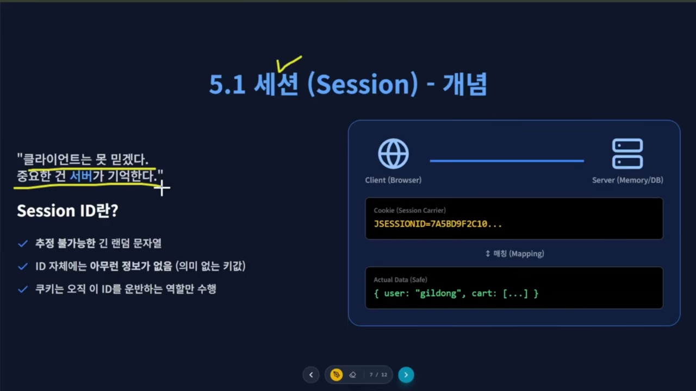
ASP(Active Server Pages), PHP(PHP: Hypertext Preprocessor), JSP(JavaServer Pages) 같은 서버 기술에서 세션은 사용자 인증의 표준으로 자리 잡았어요.
서버가 늘어나면 생기는 문제
그림 왼쪽의 사용자 A가 로드 밸런서를 거쳐 서버 1과 서버 2로 나뉘어 들어가요. 세션은 서버 1 메모리에만 있으니, 다음 요청이 서버 2로 가면 서버 2는 '넌 누구세요?'라고 묻게 돼요. 아래 왼쪽 칸이 이 확장성 문제예요. 해결책으로 같은 사용자를 계속 같은 서버로 보내는 스티키 세션, 또는 Redis 같은 공용 저장소에 세션을 두는 방법을 적어 뒀어요. 둘 다 인프라가 복잡해져요.
오른쪽 칸은 메모리 부담이에요. 동시 접속자가 10만 명이면 서버가 세션 객체 10만 개를 메모리에 들고 있어야 해요.
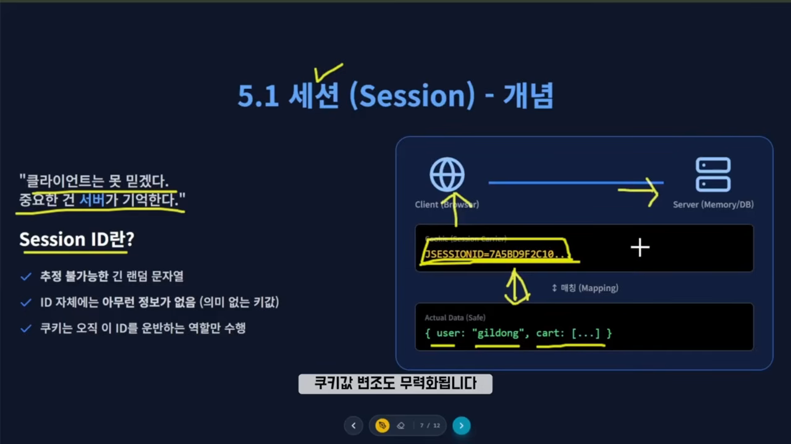
JWT: 다시 클라이언트로, 대신 서명해서
JWT(JSON(JavaScript Object Notation) Web Token)는 세션과 반대로 상태 관리를 다시 클라이언트로 돌려보내요. 다만 쿠키처럼 맨몸으로 보내지 않고 서명을 붙여요. 슬라이드의 부제가 '서버는 잊어라, 토큰을 믿어라'예요.
오른쪽 'JWT Structure'를 보면 토큰은 점으로 나뉜 세 부분이에요. Header에는 알고리즘, Payload에는 ID·Role·Exp 같은 데이터, Signature에는 위변조 방지 서명이 들어가요. 왼쪽 'Self-contained'는 필요한 정보가 토큰 안에 다 있으니 DB(Database) 조회 없이 인증이 끝난다는 뜻이에요. 그래서 서버를 늘리기 쉽고, 모바일이나 MSA(Microservice Architecture)처럼 API(Application Programming Interface)를 기능별로 나눈 환경과 잘 맞아요.
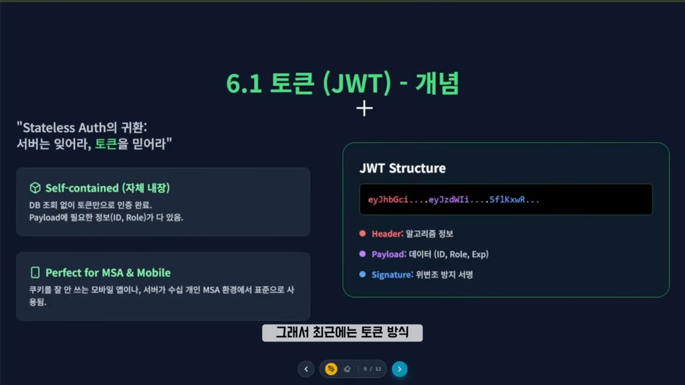
발표자는 여기서 한 가지를 못 박아 둬요. JWT는 암호화 토큰이 아니라 서명 토큰이에요. 내용은 누구나 열어 볼 수 있고, 막는 건 위조와 변조뿐이에요. 이 점은 다음 섹션에서 다시 나와요.
JWT의 한계
왼쪽 'Payload 크기'는 정보를 많이 담을수록 토큰이 길어져 요청마다 보내는 데이터가 늘어난다는 점이에요. 발표자도 크지 않은 단점이라고 해요. 오른쪽 '강제 만료 불가'가 진짜 문제예요. 한 번 발급한 토큰은 유효 기간 전까지 서버가 폐기할 수 없어서, 탈취되면 만료될 때까지 공격자가 계속 써요. 아래 빨간 줄의 대응책이 Refresh Token과 Blacklist예요.
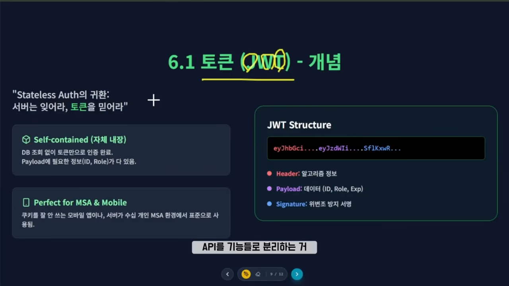
Access Token은 수명을 짧게, Refresh Token은 길게 둬서 Access Token이 금방 만료되게 하는 방식이에요. 그런데 Refresh Token은 서버에 저장해야 해서 무상태라는 JWT의 지향과 어긋나고, Refresh Token이 털리면 문제가 더 커져요.
세 기술을 나란히 놓으면
마지막 슬라이드는 쿠키(1994), 세션(2000년대), 토큰(2010년대~)을 한 줄로 이어요. 각 칸 아래 빨간 X와 초록 체크가 약점과 강점이에요.
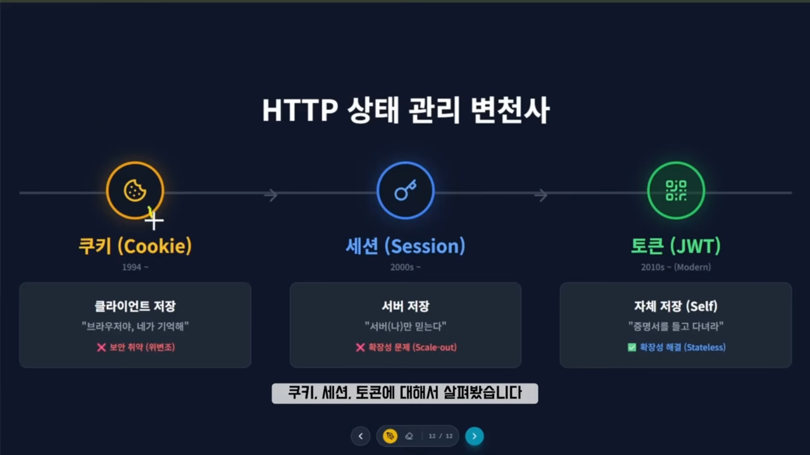
| 방식 | 상태를 두는 곳 | 좋은 점 | 약점 |
|---|---|---|---|
| URL 파라미터 | 주소 자체 | 구현이 단순해요 | 노출, 링크 공유 시 계정 넘어감 |
| 쿠키 | 브라우저 | 브라우저가 자동 저장·전송 | 변조, XSS·CSRF, 트래픽 낭비 |
| 세션 | 서버 메모리 (브라우저엔 ID만) | 정보 노출·변조 차단 | 서버 확장성, 메모리 부담 |
| JWT | 토큰 안 (서명으로 보호) | DB 조회 없음, 확장 쉬움 | 강제 만료 불가, 크기 |
발표자의 결론은 만병통치약은 없다는 거예요. 보안이 더 중요하면 세션이, 확장성과 모바일 환경에서는 JWT가 유리해요. 기술보다 맥락에 맞는 설계가 중요하다고 해요.
JWT에 대한 두 가지 오해
두 번째 영상은 질문 두 개로 시작해요. 'JWT는 데이터 노출을 책임지나요?'와 'JWT가 통째로 탈취되면 어떻게 되나요?'예요. 발표자는 이 둘에 정확히 답하지 못하면 JWT 보안을 오해하고 있는 거라고 봐요.
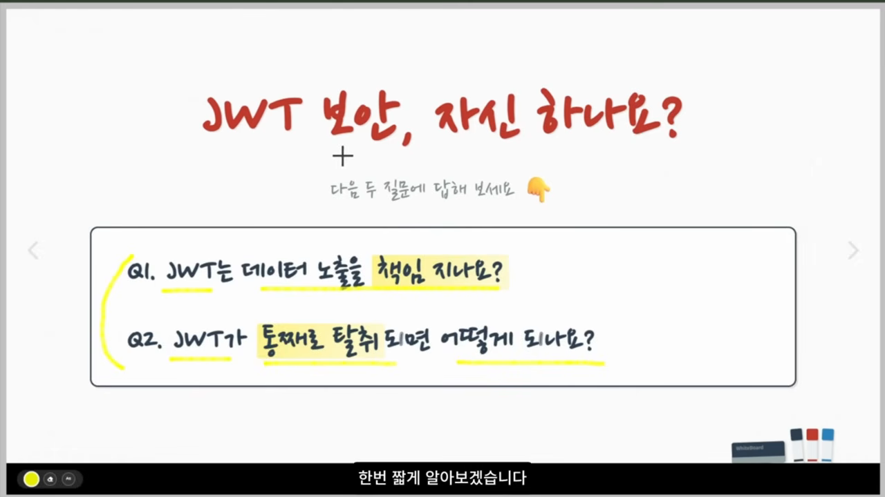
오해 1: JWT가 내용을 숨겨 준다
슬라이드 왼쪽 'JWT가 보장하는 것 (Signature)'에는 두 가지만 있어요. 서버가 발급한 토큰인가(출처, 위조 방지), 내용이 바뀌지 않았는가(무결성). 그리고 '이것만 보장!'이라고 적어 뒀어요. 오른쪽 '보장하지 않는 것'에는 기밀성 하나가 있어요. JWT는 서명만 할 뿐 암호화하지 않거든요.
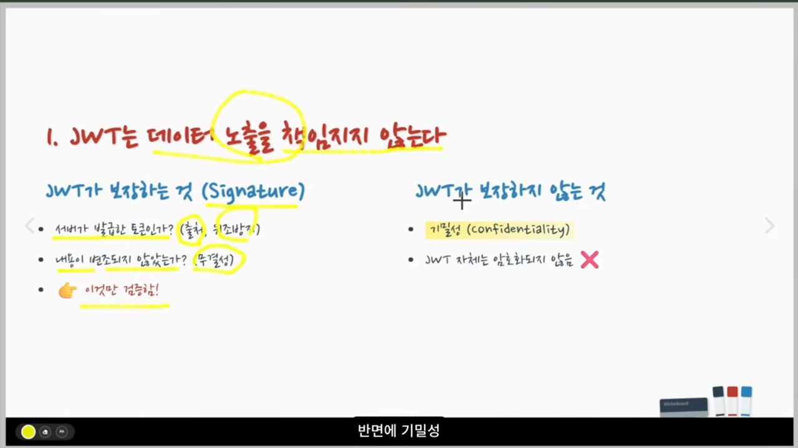
다음 슬라이드가 이유를 보여 줘요. 토큰은 Header, Payload, Signature를 점으로 이은 문자열인데, Payload는 Base64URL로 인코딩만 된 거예요. 슬라이드 아래 결론은 Payload에 '숨겨진 정보'가 아니라 '읽을 수 있지만 바꾸면 안 되는 정보'만 넣으라는 거예요.
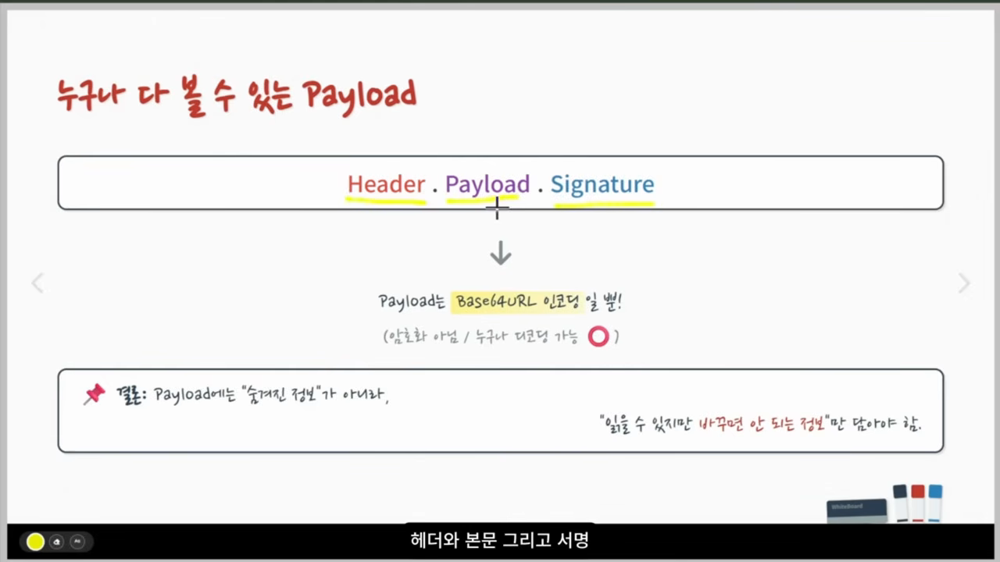
발표자는 jwt.io에 토큰을 붙여 넣어 바로 확인시켜요. 왼쪽에 붙여 넣은 토큰이 오른쪽 'Decoded Header'와 'Decoded Payload'로 풀려 alg, sub, name, iat 같은 값이 그대로 보여요. 토큰만 손에 넣으면 누구나 볼 수 있다는 뜻이에요.
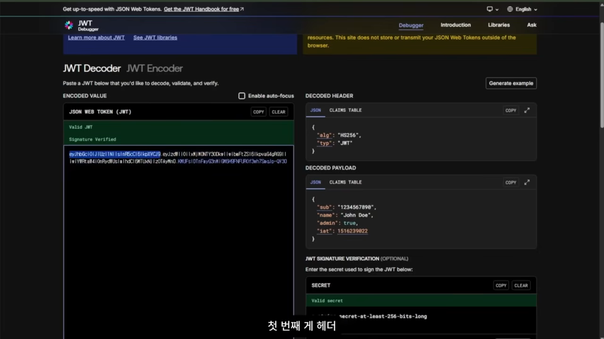
오해 2: 훔쳐 가도 고치지 못하니 안전하다
공격자는 토큰을 고칠 생각이 아예 없어요. 그대로 복사해서 자기 인증 헤더에 붙이면, 서버는 훔친 사람을 원래 주인으로 알아봐요. 슬라이드 제목의 'Token Hijacking'이 이거예요.
그 아래 'JWT는 Bearer Token', '소지자(Bearer) = 주인'이 핵심이에요. 가운데 노란 '현금(Cash)' 상자가 비유예요. 현금은 위조하기 어렵지만 훔치면 그대로 쓸 수 있어요. 빨간 글씨가 결론이에요. 공격자는 신원을 알 필요도, 데이터를 수정할 필요도 없이 복사와 붙여넣기면 끝나요.
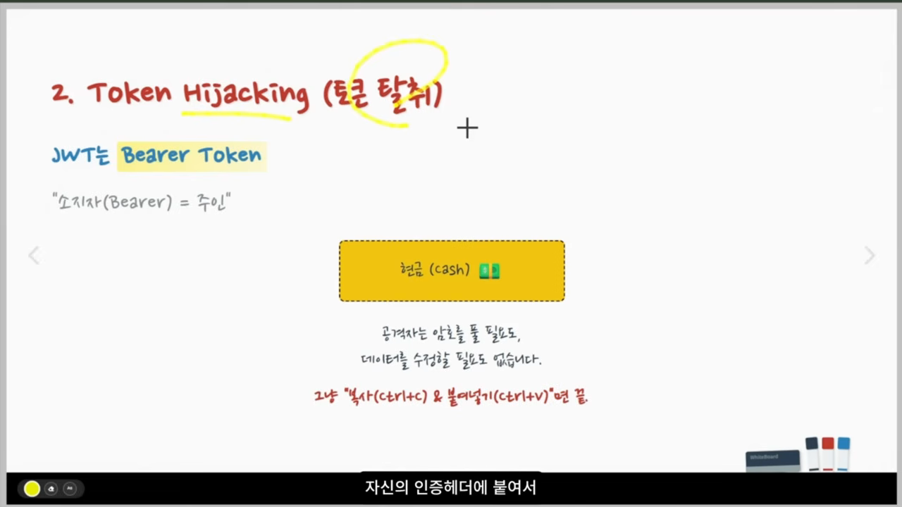
탈취 시나리오 슬라이드는 세 칸이에요. 1번 '탈취'의 경로는 XSS 공격, 로그 노출, 공용 PC(Personal Computer) 등이에요. 로컬 스토리지에 둔 토큰을 스크립트로 빼 가거나, 아무나 볼 수 있는 로그 저장소에서 가져가거나, 로그아웃 처리 때 로컬 스토리지를 지우지 않아 PC에 남은 토큰을 가져가요. 2번 '공격'은 토큰 수정 없이 헤더에 그대로 붙여 넣는 거고, 3번 '서버'는 서명 OK, 만료 전 OK이니 정상 유저로 판단해요.
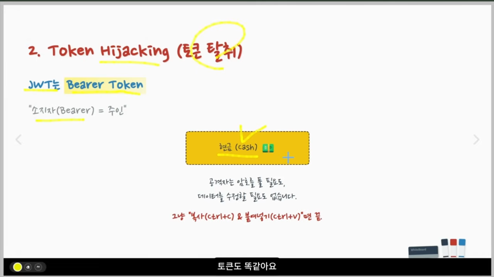
짧은 대처법
두 번째 영상은 대처법 네 줄로 끝나요. 이 목록은 마지막 영상에서 더 자세히 다시 나와요.
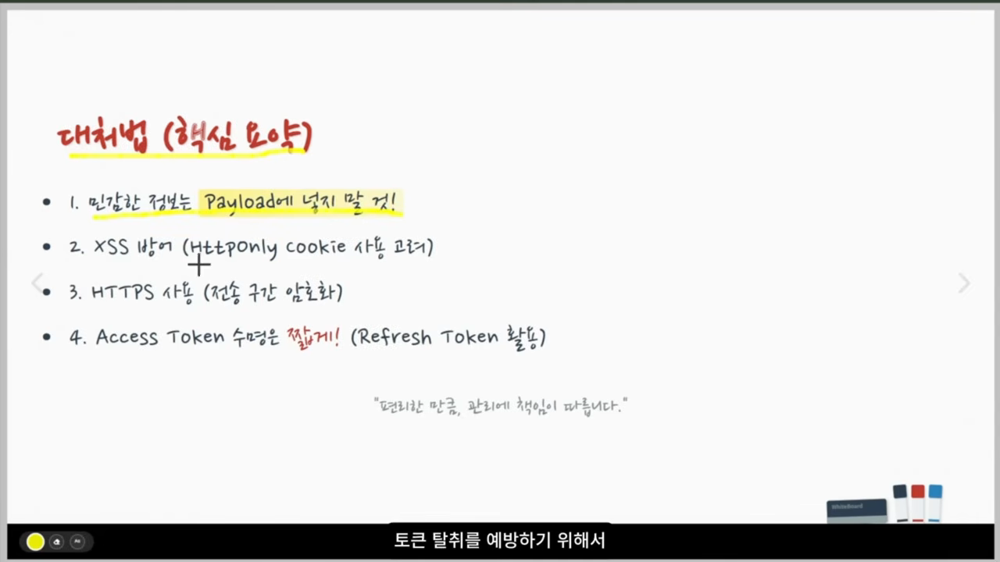
- 전화번호, 주민번호, 비밀번호 같은 민감 정보는 Payload에 절대 넣지 않아요.
- 토큰을 로컬 스토리지 대신 HttpOnly 쿠키에 둬요. 프런트에서 토큰 정보가 필요하면 서버에 물어보는 쪽이 나아요.
- 평문으로 오가다 털리지 않도록 HTTPS는 필수예요.
- Access Token 수명은 짧게 하고 Refresh Token을 써요. Refresh Token도 털리면 같은 일이 생기니 역시 HttpOnly 쿠키에 둬요.
발표자는 JWT가 보안에 나쁜 기술이라는 뜻이 아니라고 덧붙여요. 원래 역할이 그렇다는 거예요.
토큰은 어떻게 털릴까요
세 번째 영상은 화이트보드로 JWT 인증 구조부터 그려요. 사용자가 아이디와 비밀번호로 인증 API에 로그인하면 인증 API가 JWT를 만들어 돌려줘요. 브라우저는 이 토큰을 로컬 스토리지나 세션 스토리지에 저장해요. 이후 쇼핑 API 같은 다른 서비스를 부를 때 인증 헤더에 JWT를 담아 보내고, 앞단의 인증 필터가 검사해서 통과하면 API를 호출하고 실패하면 인증 없음 상태 코드를 돌려줘요.
그림은 시연 시나리오예요. 위쪽 userA의 브라우저 로컬 스토리지에 jwt가 있어요. 왼쪽 곡선이 그 토큰을 아래 userB의 저장소로 그대로 옮기는 장면이고, userB는 그 토큰으로 오른쪽 쇼핑 API를 불러요.
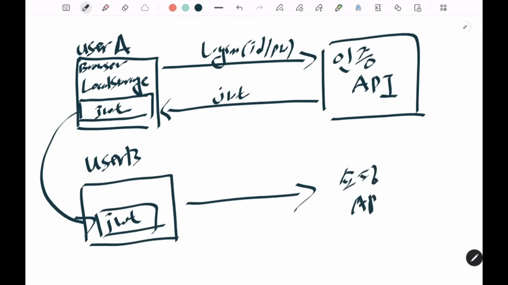
탈취 경로 다섯 가지
이어서 발표자가 화이트보드에 손으로 적은 경로를 표로 옮겼어요. 원래 판서는 글씨가 작고 겹쳐 있어서 읽기 어려워요.
| 경로 | 어떻게 털리나요 |
|---|---|
| 1. XSS | 가장 유명한 웹 공격이에요. 페이지에 심은 스크립트가 로컬 스토리지의 토큰을 읽어 가요. |
| 2. 크롬 확장 프로그램 | 설치한 확장 프로그램은 DOM(Document Object Model)과 로컬 스토리지에 접근할 수 있어요. 악성 코드가 들어 있으면 토큰을 가져가요. |
| 3. PC방·도서관 같은 공용 PC | 로그아웃 없이 창만 닫으면 로컬 스토리지의 토큰이 계속 남아요. 다음 사람이 들어가면 로그인 상태이고, 토큰을 가져가 집에서 쓸 수도 있어요. |
| 4. 피싱 사이트 | 오타 주소로 유도해 아이디와 비밀번호를 받은 뒤, 진짜 사이트에서 직접 JWT를 발급받아요. 사용자가 비밀번호를 바꿔도 이미 발급된 토큰은 유효해요. |
| 5. 서버 로그 | JWT가 로그에 찍히는 경우가 많아요. 로그 파일은 가볍게 여겨 접근하는 사람이 많으니, 권한 없는 사람이 토큰을 얻을 수 있어요. |
4번과 5번이 특히 눈여겨볼 만해요. 피싱은 비밀번호를 바꾸는 것만으로 끝나지 않고, 서버 로그는 보안 3요소 중 기밀성이 깨지는 전형적인 경우라고 발표자는 설명해요.
직접 해 본 탈취 시연
시연용 인증 API는 Python FastAPI로 만들었어요. 맨 위 'JWT 설정' 네 줄이 핵심이에요. 서명 키 SECRET_KEY, 서명 알고리즘 HS256, Access Token 만료 60분, Refresh Token 만료 7일이에요. 그 아래 fake_users_db에 userA와 userB를 비밀번호, 권한과 함께 메모리에 올려 뒀어요. DB 연동은 하지 않았어요.
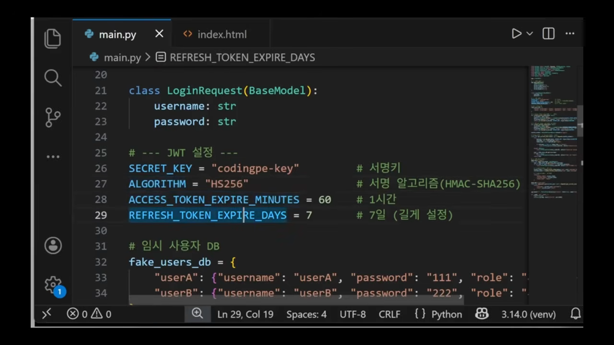
로그인 엔드포인트 /login은 요청의 아이디와 비밀번호를 확인하고, 틀리면 400 오류를 돌려줘요. 맞으면 79~80번 줄에서 Access Token과 Refresh Token을 만들고, 84~86번 줄처럼 두 토큰과 "token_type": "bearer"를 돌려줘요. 토큰을 만드는 함수는 만료 시간과 토큰 타입을 넣고 서명 키와 알고리즘으로 서명해요. 여기에 토큰에서 사용자를 꺼내 이름과 권한을 돌려주는 /users/me가 하나 더 있어요.
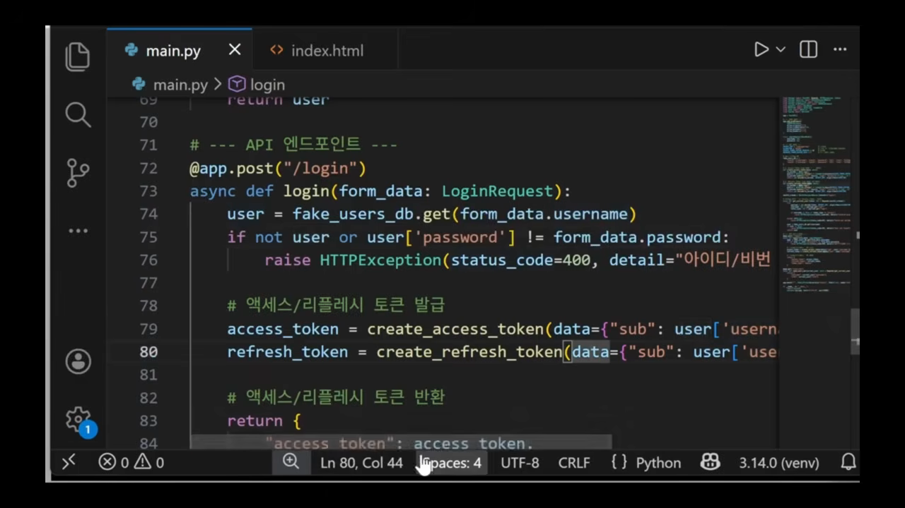
프런트 코드는 페이지가 열릴 때 checkAuth()로 인증 여부를 확인해요. 54번 줄에서 localStorage.getItem('access_token')으로 토큰을 꺼내고, 없으면 로그인 화면을 보여 줘요. 있으면 /users/me를 부르면서 헤더에 Authorization: Bearer ${token}을 넣어요. 로그인에 성공하면 받은 두 토큰을 로컬 스토리지에 저장하고, 로그아웃하면 명시적으로 지워요.
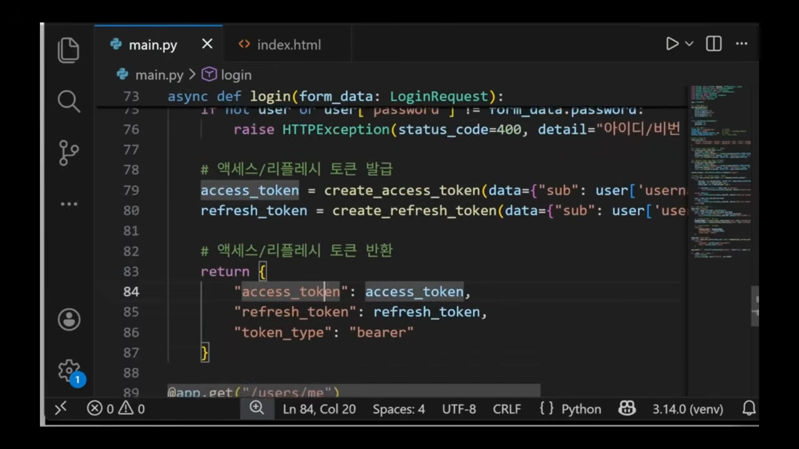
발표자는 이 구현이 실제 회사의 JWT 인증 API와 거의 같다고 해요. 언어가 달라도 핵심은 서명 키와 알고리즘이고, 서명 키는 코드에 두지 않고 환경 설정 파일에 잘 보관해야 해요.
토큰만 바꿔 끼우기
서로 다른 사용자를 흉내 내려고 브라우저 두 개를 써요. 크롬에서 userA로 로그인하면 '권한: 사용자A'가 떠요. 아래 개발자 도구의 Application 탭, Local storage에 access_token과 refresh_token 두 줄이 보여요. 엣지에서는 userB로 로그인해 둬요.
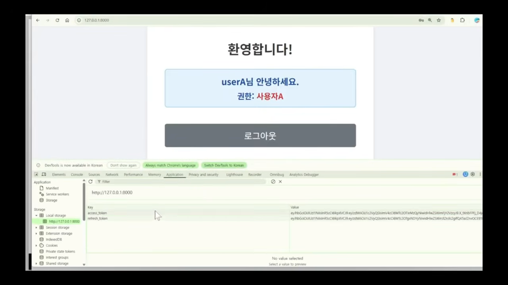
access_token을 jwt.io에 넣으면 알고리즘, 사용자 userA, 1시간 만료가 그대로 보이고, refresh_token은 일주일짜리로 나와요. 이제 userA가 userB의 토큰을 훔쳤다고 가정해요. 크롬 로컬 스토리지에서 자기 access_token을 지우고 userB의 값을 통째로 붙여 넣은 뒤 새로고침해요. 화면이 바로 'userB님 안녕하세요, 권한: 사용자B'로 바뀌어요.
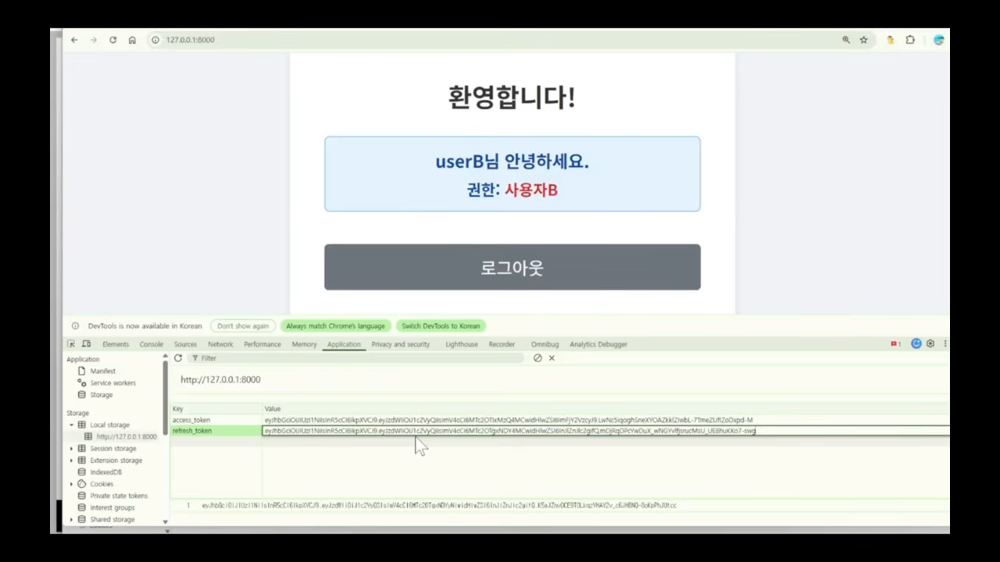
이 상태로 Access Token이 만료될 때까지 B로 활동할 수 있어요. Refresh Token까지 바꿔 끼우면 더 길어져요. Refresh Token은 수명도 길고, Access Token이 만료될 때마다 새로 받아 올 수 있어서 훨씬 치명적이에요. 발표자는 개발자들에게 자기 서비스에서 이걸 직접 시험해 보라고 권해요.
이게 JWT의 문제는 아니에요. JWT는 그렇게 설계된 거예요.
— 영상 33:52
막는 법: 훔치지 못하게, 훔쳐가도 쓸모없게
마지막 영상은 시연 다음 날 올라왔고, 시청자 댓글로 들어온 대응책을 함께 살펴보는 형식이에요. 본론에 앞서 발표자는 JWT에 잘못이 없다는 점을 다시 짚어요.
슬라이드 왼쪽 'Stateless (무상태)' 칸이 JWT가 하는 일의 범위예요. 서버는 토큰을 발급만 하고 기억하지 않아요. 검증하는 건 '이거 내가 발급한 거 맞아?'(서명 확인)와 '내용이 변조되지 않았어?'(무결성) 둘뿐이고, '누가 가지고 왔는지'는 묻지 않도록 설계됐어요. 오른쪽 'Bearer Token (현금)' 칸은 주운 사람이 5만 원권을 써도 화폐의 위조지폐 문제가 아니듯, 지갑인 로컬 스토리지 관리를 소홀히 한 쪽의 책임이라는 비유예요.
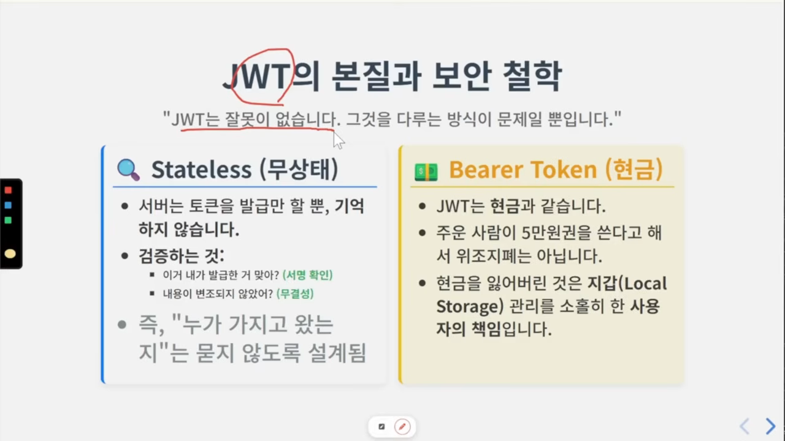
그래서 대응을 두 관점으로 나눠요. 슬라이드 아래 버튼 두 개가 그 틀이에요. ① 훔치지 못하게 하기, ② 훔쳐가도 쓸모없게 하기.
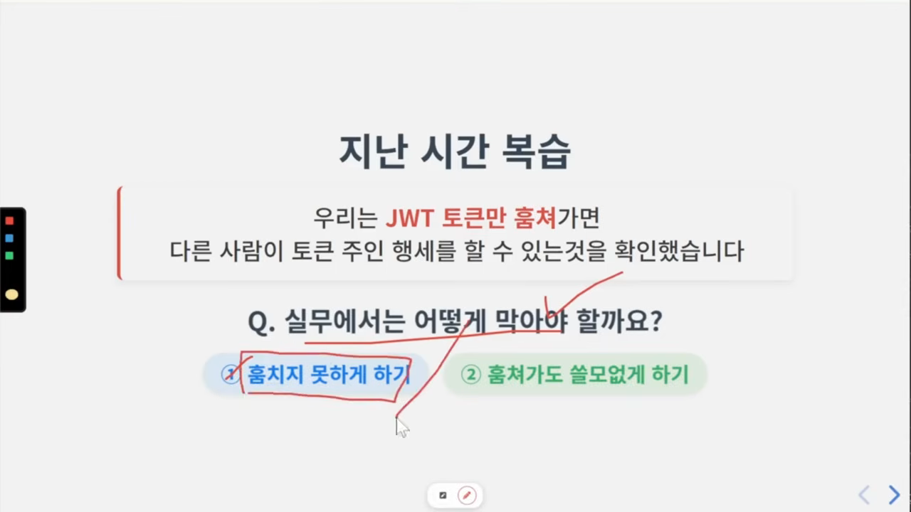
기본 원칙: 중요 정보는 넣지 않기
왼쪽 'Base64 ≠ Encryption'은 앞 영상의 결론 그대로예요. 오른쪽에 넣어도 되는 것과 안 되는 것을 나눠 뒀어요. 권장은 User ID(PK(Primary Key)), 권한(Role), 만료 시간(exp) 같은 식별자이고, 절대 금지는 비밀번호, 주민번호, 전화번호, 이메일 같은 민감 정보예요.
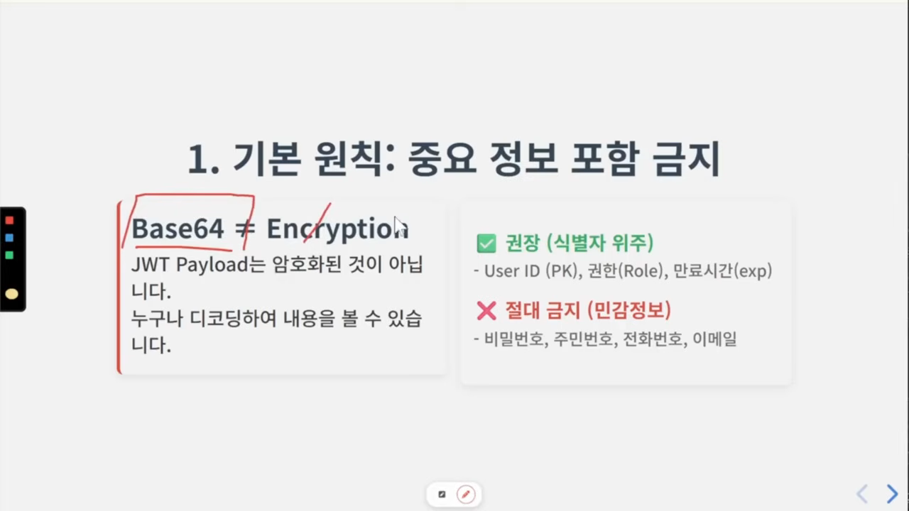
① 훔치지 못하게 하기
슬라이드에 세 항목이 있어요. 첫째 HTTPS로 전송 구간을 암호화해 카페 같은 공용 Wi-Fi에서의 스니핑을 막아요. 둘째, 가운데 회색 상자가 핵심이에요. Local Storage는 자바스크립트가 접근할 수 있어 해킹 위험이 있고, HttpOnly Cookie는 브라우저만 접근하고 자바스크립트는 접근할 수 없어요. 쿠키를 쓴다면 SameSite를 Lax나 Strict로 꼭 설정해 CSRF를 막아요. 셋째 로그 마스킹으로, 서버 로그에 Authorization 헤더를 남기지 않거나 가려서 권한 없는 내부자가 토큰을 얻지 못하게 해요.
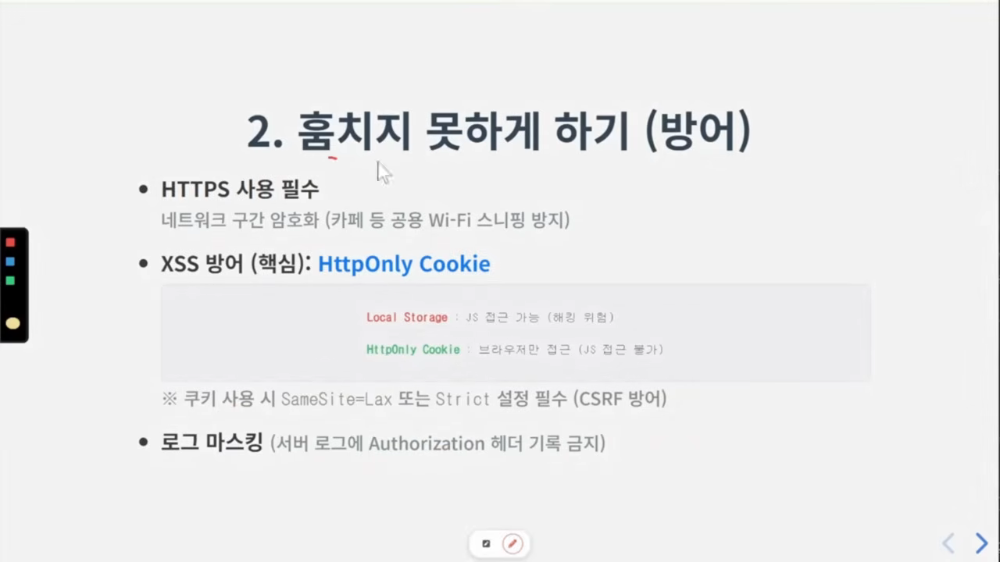
② 훔쳐가도 쓸모없게 하기
부제 '뚫릴 수 있다고 가정하고 피해를 최소화하라'가 이 관점의 전제예요. 첫 번째 칸 '유효기간 단축'은 Access Token을 30분 이내로 둬서 탈취돼도 곧 만료되게 하고, Refresh Token은 사용자 편의를 위해 2주 정도로 길게 가요.
두 번째 칸 '환경 검증 (Fingerprinting)'은 토큰을 발급할 때 User-Agent 값을 해시에 넣어 두는 방법이에요. 아래 분홍 글씨가 실제 User-Agent 예시로, OS(Operating System) 버전(Windows NT 10.0), 엔진(AppleWebKit), 브라우저 버전(Chrome/118)이 들어 있어요. 탈취한 사람의 브라우저 정보가 발급 당시와 다르면 막아요. 발표자는 완벽한 대책이 아니라 보조 수단이라고 선을 그어요.
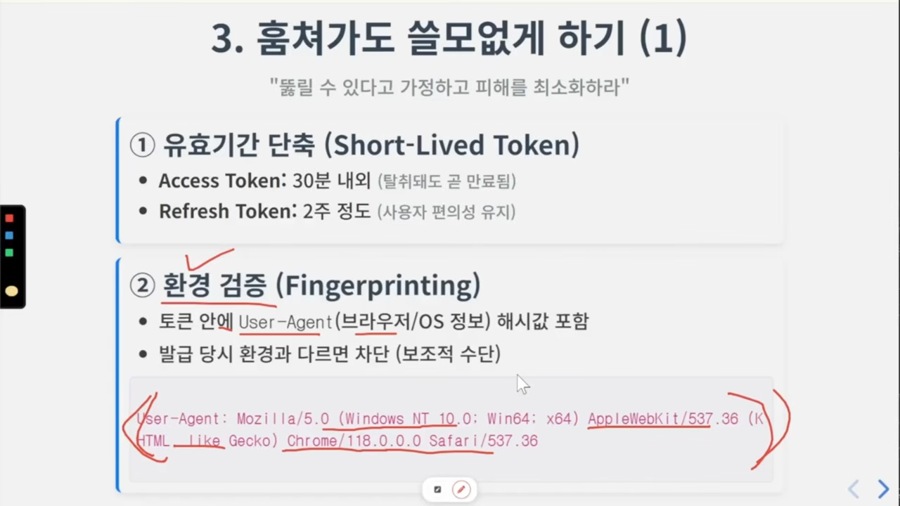
다음 슬라이드의 ③ RTR(Refresh Token Rotation)은 토큰을 갱신할 때 Refresh Token도 무조건 새것으로 바꾸는 방법이에요. 이미 쓴 Refresh Token이 다시 들어오면 탈취됐다고 보고, 그 사용자의 모든 토큰을 즉시 무효화하고 강제 로그아웃해요. ④는 두 가지예요. 계좌 이체나 비밀번호 변경 같은 중요 기능은 2차 인증(2FA)을 받아요. 공격자는 토큰만 있으니 여기서 막혀요. 그리고 로그아웃한 토큰의 고유 ID인 jti를 Redis 블랙리스트에 저장해 두고, 같은 토큰이 다시 오면 차단해요.
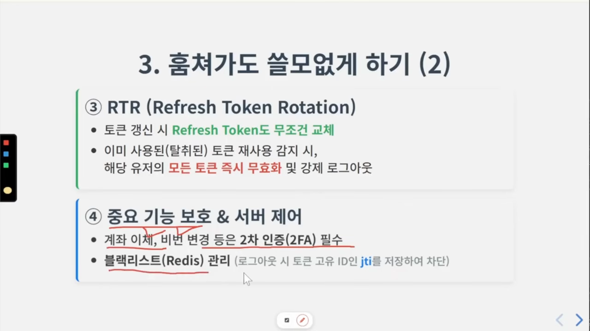
발표자는 네 가지를 다 적용하라는 게 아니라고 해요. 비즈니스의 보안 강도와 도메인 특성에 맞춰 골라 쓰면 돼요.
실무에서는 어떻게 고를까요
발표자가 실무에서 써 온 방법은 둘 중 하나였어요. 슬라이드 부제가 'Stateless의 장점 vs 보안성의 균형'이에요.
왼쪽 Case 1 '순수 Stateless'는 JWT가 태어난 설계 목적을 그대로 살려요. Access Token은 짧게, Refresh Token은 길게, 중요 기능은 2차 인증, 토큰에 User-Agent 정보를 넣어 보완해요. 서버에 저장할 것도 DB 조회도 없어 확장성이 좋지만, 탈취되거나 강제 로그아웃이 필요해도 만료될 때까지 기다려야 해요. 오른쪽 Case 2 '하이브리드'는 Refresh Token을 서버에서 관리해요. 탈취를 알아채는 즉시 무효화하고 강제 로그아웃할 수 있어요. 대신 갱신할 때마다 DB나 Redis를 조회하니 Stateful이 돼요.
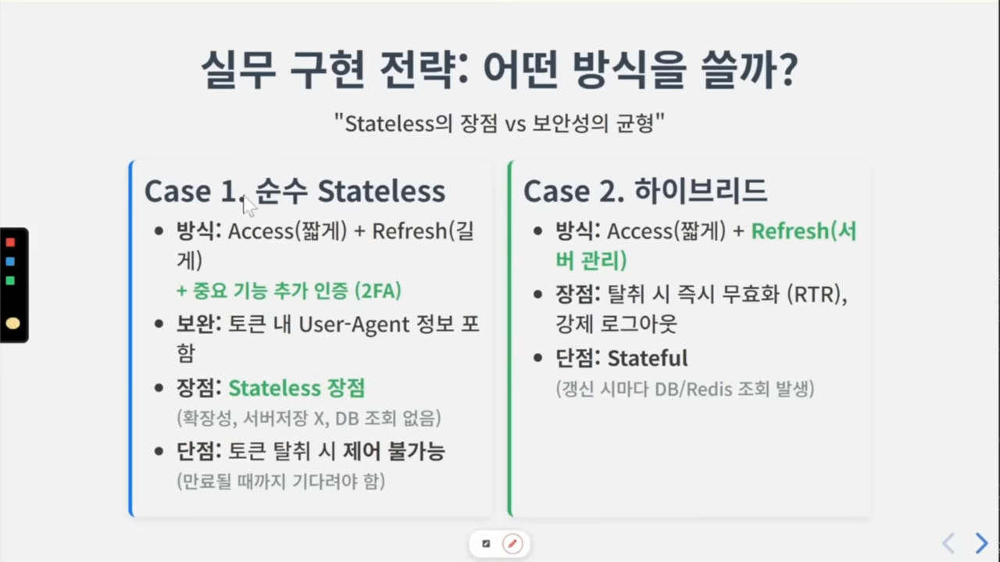
하이브리드 패턴의 토큰 구조
슬라이드 부제는 'Access는 가볍게, Refresh는 추적 가능하게'예요. 두 토큰 모두 sub, exp, type, jti를 갖는데, 오른쪽 Refresh Token Claim에만 파란 sid가 더 있어요. jti는 토큰 식별자로 갱신할 때마다 바뀌고, sid는 로그인한 세션의 식별자로 고정이에요. 둘 다 UUID(Universally Unique Identifier) v4로 만들어요. 예시 만료는 Access 15분, Refresh 14일이에요.
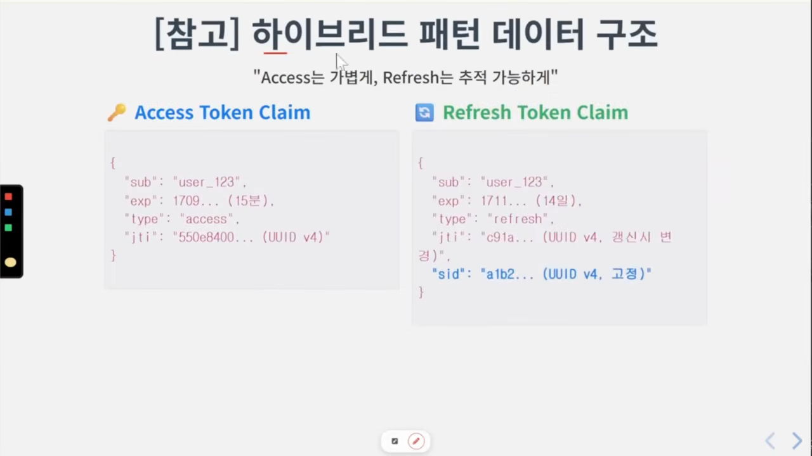
Redis에는 sid를 키로, 지금 유효한 Refresh Token의 jti를 값으로 저장해요. 키의 TTL(Time To Live)은 Refresh Token 만료 시간과 같게 둬요.
재사용을 잡아내는 흐름
아래 그림은 정상 갱신과 탈취 감지를 한 흐름에 이어 그린 거예요. 정상 사용자가 갱신하면 jti가 v1에서 v2로 바뀌어 저장돼요. 그 뒤 해커가 훔쳐 둔 v1을 보내면 저장된 값과 다르니 바로 들통나요.
sequenceDiagram participant U as 정상 사용자 participant H as 해커 participant S as 서버 participant R as Redis U->>S: Refresh Token 전송 (sid, jti=v1) S->>R: refresh:sid 조회 R-->>S: 저장된 jti=v1 Note over S: 요청 jti == 저장 jti → 통과 S->>R: 새 jti=v2로 업데이트 S-->>U: 새 Access Token + 새 Refresh Token(v2) H->>S: 훔친 옛 Refresh Token 전송 (sid, jti=v1) S->>R: refresh:sid 조회 R-->>S: 저장된 jti=v2 Note over S: 불일치 → 탈취로 판단 S->>R: sid 키 즉시 삭제 Note over U,H: 해커도, 원래 사용자도 로그아웃
슬라이드의 빨간 박스가 탈취 감지 단계예요. 해커가 이미 사용된 구버전 Refresh Token으로 요청하면, 요청 jti와 저장된 jti가 불일치해요. 서버는 보안 위협으로 보고 그 sid의 Redis 키를 즉시 지워요. 결과적으로 해커는 물론 원래 사용자도 로그아웃돼요.
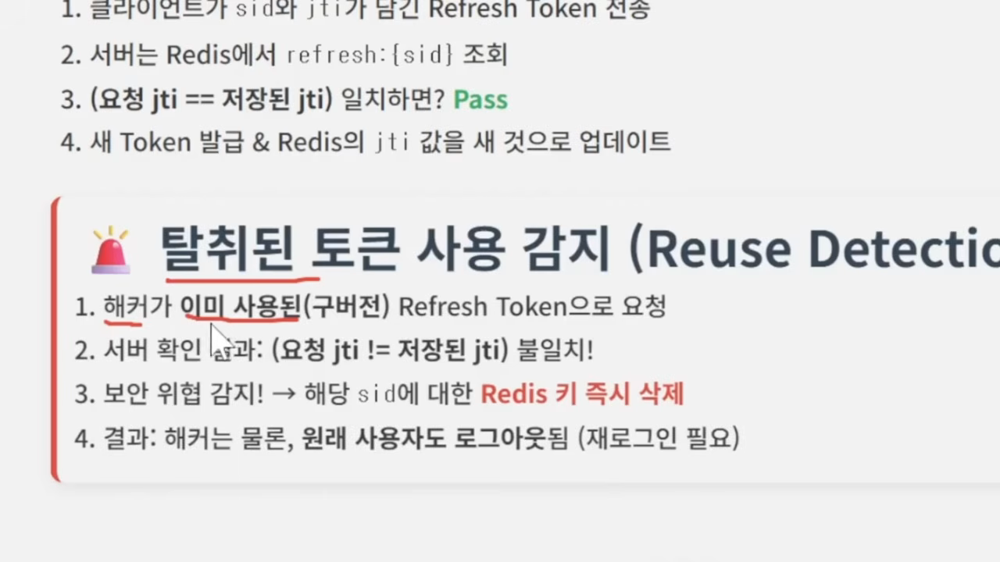
최종 정리
마지막 슬라이드는 두 갈래를 체크리스트로 묶어요. 왼쪽 '훔치지 못하게 하기'는 HTTPS, HttpOnly Cookie, SameSite 설정이에요. 발표자는 이 셋은 필수로 다 적용하라고 해요. 오른쪽 '훔쳐가도 쓸모없게 하기'는 Access Token 수명 단축, RTR 적용, 환경 검증과 2차 인증, jti 기반 블랙리스트예요.
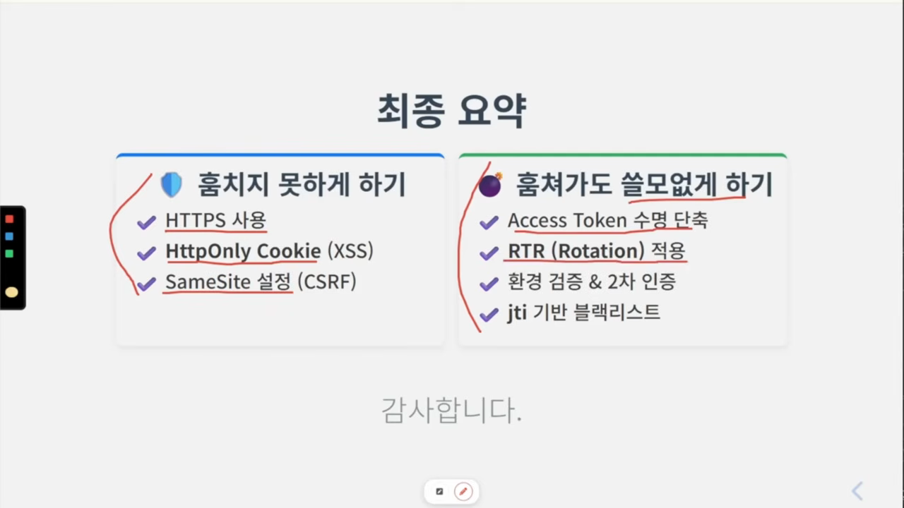